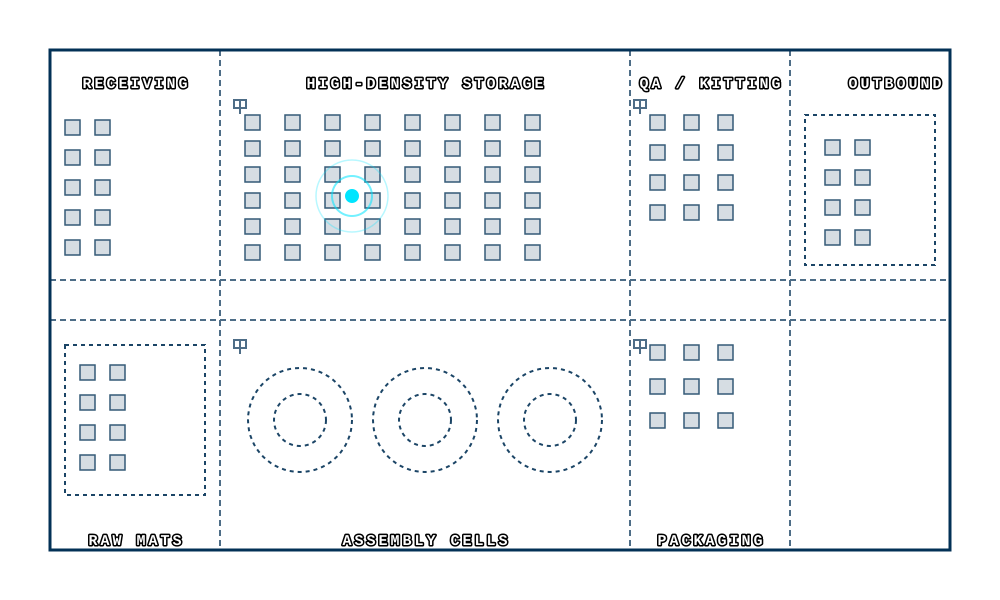

01 / Smart Tag
Smart Tag
A pallet, tote, or bin gets an H3RD e-ink smart tag.
Displays real-time part numbers, quantities, and operational routing instructions directly on the asset.
H3RD bridges the gap between physical floor operations and digital management systems, replacing antiquated paper routing with smart e-ink labels featuring BLE location tracking, real-time screen updates, and visual notification features to eliminate human error.
From tagged asset to real-time visibility. Interact with the workflow below to understand how H3RD connects the physical floor to your digital systems.
A pallet, tote, or bin gets an H3RD e-ink smart tag.
Displays real-time part numbers, quantities, and operational routing instructions directly on the asset.
Bluetooth gateways transmit and receive tag updates and location data.
Mesh network captures precise dwell times, area entry/exits, and instantly pushes visual updates to the e-ink tags.
Managers see movement, status, and bottlenecks in real time.
Digital twin interface highlights stalled processes with geospatial tracking map.
Data flows into your existing systems for tracking and action.
Trigger automated back-office transactions via modern API connections seamlessly.
Instant location and status data for every asset on the floor.
E-ink displays ensure workers always know exactly what to do next.
Automated geo-transactions eliminate human scanning mistakes.
Built to plug seamlessly into your existing ERP and WMS platforms.
A seamlessly integrated ecosystem of smart hardware and spatial-intelligence software. H3RD replaces static tracking with dynamic, location-aware digital labels that actively guide operators and orchestrate your floor’s workflows in real time.
Enterprise-grade, ultra-low power tags (2.1" to 7.5"). Highly readable under industrial glare, persistently displaying critical barcodes and dynamic routing info even without power.

A lightweight network of BLE scanners calculates exact coordinates via advanced trilateration, logging MAC addresses and RSSI values to determine precise facility positioning.
Physical movement translates to digital action. Entering geofenced zones automatically triggers WMS transactions, eliminating manual barcode scanning and labor time.
Transforms tracking into active security. Triggers immediate alerts if a pallet is loaded incorrectly, or if sensitive materials leave designated secure areas.
Measurable impact across the supply chain. From eliminating mispicks in complex distribution centers to enforcing rigid compliance in high-tech manufacturing, discover how intelligent tracking directly accelerates your bottom line.
H3RD's pricing strategy targets roughly 20-25% of a client's annualized operational wastage, ensuring a rapid payback period. In enterprise deployments, the system generates returns in two massive categories:
Massive, quantifiable reductions in scrap, lost materials, and rework. Automates supervisor KPIs, eliminates manual cycle counting, and removes the time spent "hunting" for lost pallets.
Significant improvements in On-Time Delivery (OTD) metrics, facility throughput, worker satisfaction by removing tedious scanning, and leaner inventory buffers due to higher accuracy.
Tracking highly sensitive, expensive components through intricate processes like Clean Room Assembly, IPQC, and Final Testing.
Managing staggering volumes of diverse inventory, tracking incoming shipments, and ensuring 100% accuracy at pack-out.
Stop searching for lost pallets and start proactively managing your supply chain. We'll show you exactly how our spatial intelligence web app and e-ink displays work in your specific environment.